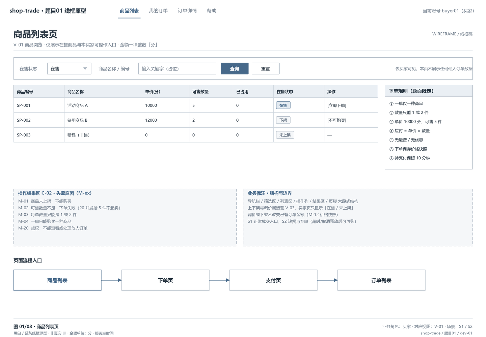
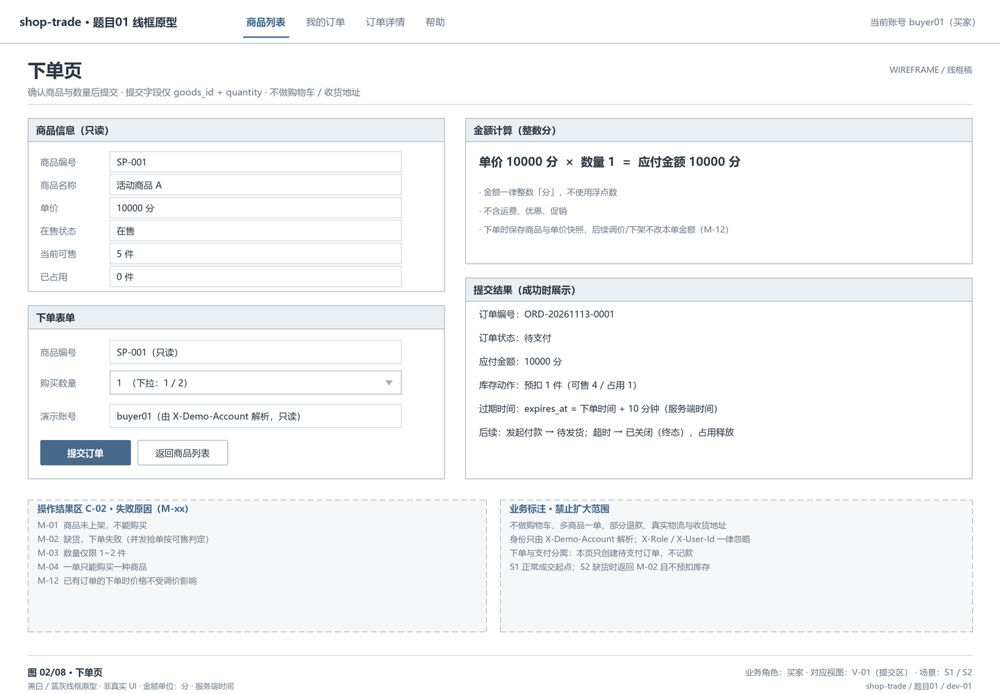
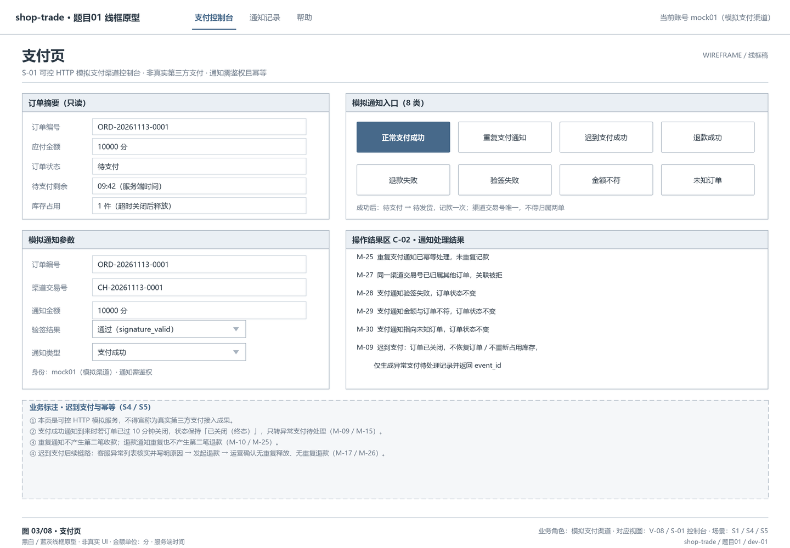
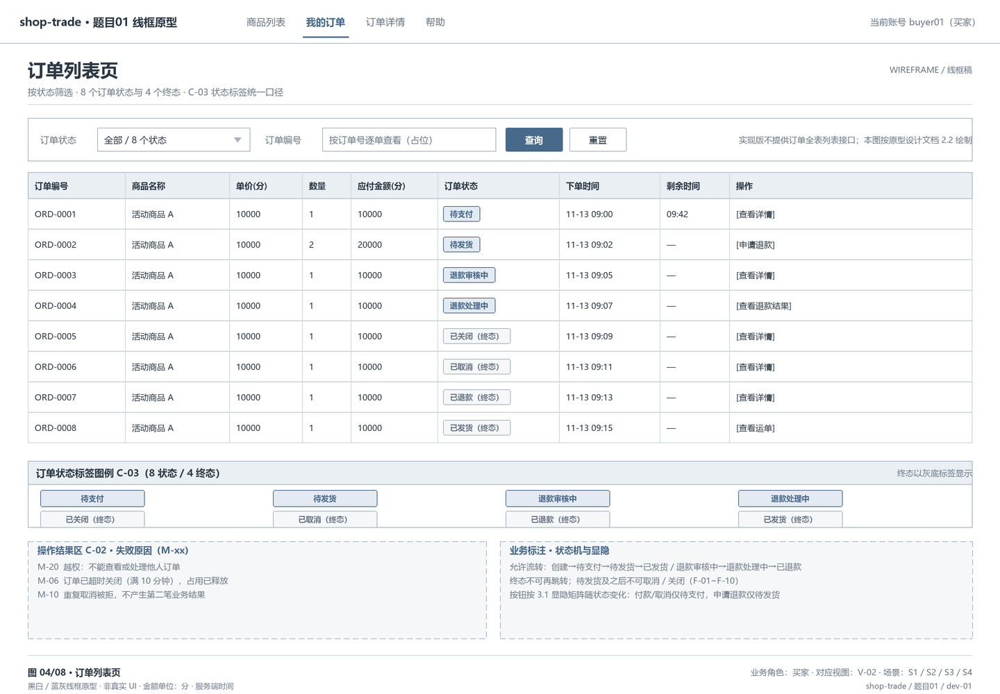
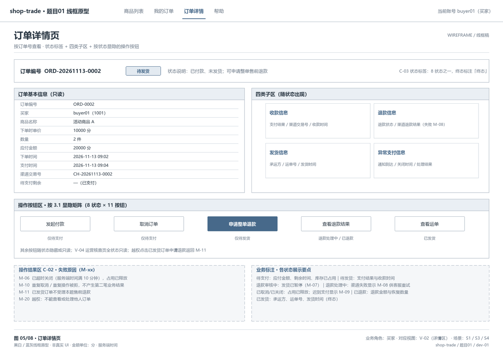
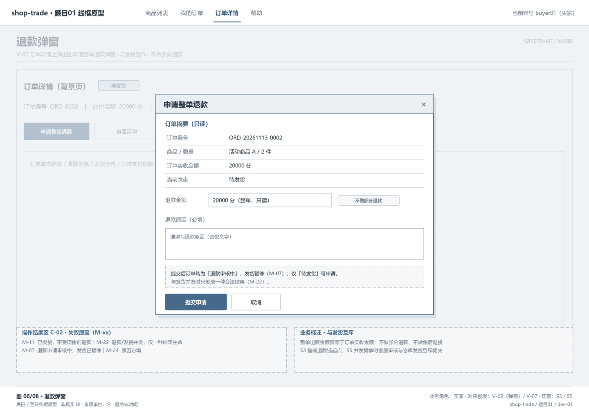
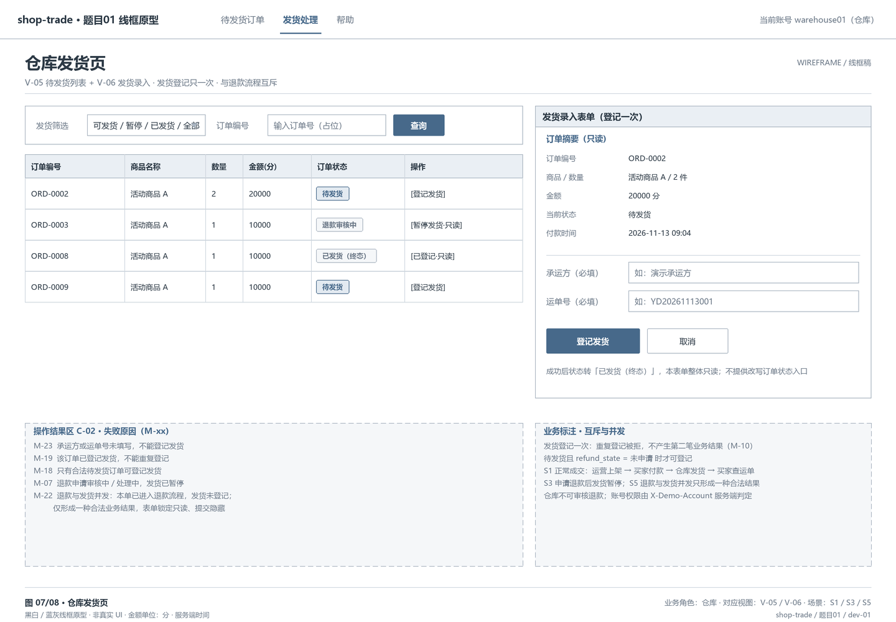
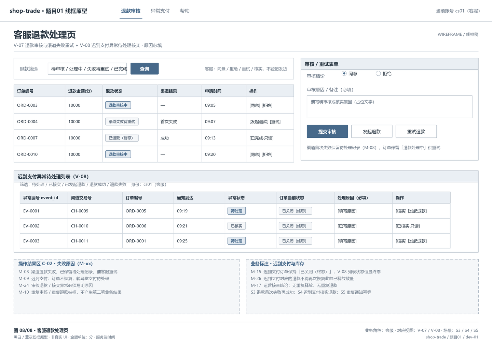

题目 01 · 线框原型图汇总（8 张）
小型电商的订单交易、发货与售前退款 ｜ shop-trade / dev-01 ｜ 2026-11-13 ｜ 黑白 / 蓝灰线框稿，非真实 UI
绘制依据：仓库内三份上游文档（需求 / 原型设计 / 任务规划）、AGENTS.md、
docs/interface-list.md 与 resource/static/ 的 V-01~V-08 视图。
统一口径：金额一律整数「分」；待支付保留 10 分钟（服务端时间）；
8 个订单状态、4 个终态（已取消 / 已关闭 / 已退款 / 已发货）；
每页保留 C-02「操作结果区」展示 M-xx 中文失败原因；身份只由 X-Demo-Account 服务端解析。
角色：买家 buyer01、仓库 warehouse01、客服 cs01、
模拟支付渠道 mock01（第 5 个参与角色，不设独立角色页面）；运营 ops01 的核查页不在本套 8 图内。
说明：仓库现有实现没有独立的「支付页」HTML 与「退款弹窗」HTML，这两张按接口清单 API-04 / API-06
与原型设计文档 2.2、2.7 的字段反推绘制；订单列表页按原型设计文档 2.2 绘制，实现版为按订单号逐单查看。
一、页面清单与业务角色
| # | 页面名称 | 文件 | 业务角色（账号 / 视图） | 主要组件 | 覆盖场景 |
|---|
| 01 | 商品列表页 | 01-商品列表页.png |
买家 buyer01 · V-01 商品浏览 |
导航栏、筛选下拉、搜索框、查询按钮、商品表格、在售状态标签、下单规则卡、流程入口 |
S1 正常成交 / S2 缺货与弃单 |
| 02 | 下单页 | 02-下单页.png |
买家 buyer01 · V-01 提交区 |
只读商品信息、数量下拉（1/2）、金额计算卡、提交结果卡、主/次按钮 |
S1 / S2 |
| 03 | 支付页 | 03-支付页.png |
模拟支付渠道 mock01 · S-01 控制台 / V-08 关联 |
订单摘要、通知参数表单、验签下拉、8 类模拟通知按钮、通知结果区 |
S1 / S4 迟到支付 / S5 幂等 |
| 04 | 订单列表页 | 04-订单列表页.png |
买家 buyer01 · V-02 我的订单 |
状态筛选、订单号输入、8 行状态表格、8 状态标签图例、显隐说明 |
S1 / S2 / S3 / S4 |
| 05 | 订单详情页 | 05-订单详情页.png |
买家 buyer01 · V-02 详情区 |
状态标签、只读基本信息、收款/退款/发货/异常四子区、按状态显隐的 5 个操作按钮 |
S1 / S3 / S4 |
| 06 | 退款弹窗 | 06-退款弹窗.png |
买家 buyer01 发起 → 客服 cs01 审核（V-02 弹窗 → V-07） |
遮罩背景页、居中 Modal、订单摘要、整单退款金额只读、原因文本框、提交/取消、互斥提示 |
S3 售前退款 / S5 并发竞争 |
| 07 | 仓库发货页 | 07-仓库发货页.png |
仓库 warehouse01 · V-05 待发货列表 + V-06 发货录入 |
发货筛选、待发货表格、订单摘要只读、承运方/运单号输入、登记按钮、只读态提示 |
S1 / S3 / S5 |
| 08 | 客服退款处理页 | 08-客服退款处理页.png |
客服 cs01 · V-07 退款审核 + V-08 迟到支付异常 |
退款筛选、审核列表、单选结论、原因文本框、审核/发起/重试按钮、异常待处理表格、终态标签 |
S3 / S4 / S5 |
场景编号采用题面「五组完整工作场景」（任务规划 TST-S1~S5）：S1 正常成交、S2 缺货与弃单、S3 售前退款（首次失败后重试成功）、S4 迟到支付、S5 操作竞争与重复通知/越权。与需求文档第 7 章的 S-01~S-05 验收子场景不是同一套编号。
二、逐页线框图
01 · 商品列表页 买家 buyer01 ｜ V-01 ｜ S1 / S2

业务角色：买家。浏览在售商品、单价（分）、可售与占用，选择商品进入下单；
不展示他人订单数据，上下架与调价属运营侧。缺货返回 M-02、未上架返回 M-01、数量越界返回 M-03。
02 · 下单页 买家 buyer01 ｜ V-01 提交区 ｜ S1 / S2

业务角色：买家。确认商品与数量（只能 1 或 2 件）后提交，仅传
goods_id + quantity；生成待支付订单、预扣库存、保存下单时价格快照，
10 分钟后由服务端时间关闭。不做购物车、多商品一单、收货地址。
03 · 支付页 模拟支付渠道 mock01 ｜ S-01 控制台 ｜ S1 / S4 / S5

业务角色：可控 HTTP 模拟支付渠道（非真实第三方）。发出 8 类支付/退款通知，
校验验签 M-28、金额 M-29、未知订单 M-30、交易号唯一 M-27 与重复通知幂等 M-25；
迟到支付 M-09 不恢复订单、不重新占用库存，只生成异常支付待处理记录并返回 event_id。
04 · 订单列表页 买家 buyer01 ｜ V-02 ｜ S1 / S2 / S3 / S4

业务角色：买家。按状态筛选本人订单，统一用 C-03 状态标签显示 8 个状态之一；
终态（已取消 / 已关闭 / 已退款 / 已发货）以灰底标注。越权查他人订单返回 M-20；
实现版按订单号逐单查看，不提供全表列表接口。
05 · 订单详情页 买家 buyer01 ｜ V-02 详情区 ｜ S1 / S3 / S4

业务角色：买家。按订单号查看价格快照、金额与四类子区；
操作按钮遵循 3.1 显隐矩阵（付款/取消仅待支付、申请整单退款仅待发货、查看运单仅已发货）。
已发货申请退款返回 M-11，重复取消返回 M-10，超时返回 M-06。
06 · 退款弹窗 买家 buyer01 发起 → 客服 cs01 审核 ｜ V-02 弹窗 / V-07 ｜ S3 / S5

业务角色：买家在订单详情上发起售前整单退款（原因必填、金额恒等于实收、不做部分退款），
提交后订单转「退款审核中」并暂停发货 M-07；与仓库发货互斥，并发时只形成一种合法结果 M-22；
已发货不受理 M-11。后续由客服在 V-07 审核。
07 · 仓库发货页 仓库 warehouse01 ｜ V-05 / V-06 ｜ S1 / S3 / S5

业务角色：仓库。从待发货列表选单，填写承运方与运单号（M-23），
登记发货只一次（重复 M-19、非待发货 M-18）；退款流程中暂停发货 M-07，
退款与发货并发只形成一种结果 M-22。成功后状态转「已发货（终态）」且表单只读。
08 · 客服退款处理页 客服 cs01 ｜ V-07 / V-08 ｜ S3 / S4 / S5

业务角色：客服。同意/拒绝退款并写明原因（M-24），渠道首次失败保留待处理 M-08 供重试；
核实迟到支付异常（event_id、通知到达/关闭时间、处理原因），发起退款但不得再次恢复库存 M-26，
订单当前状态恒显「已关闭（终态）」M-15。客服不登记发货。